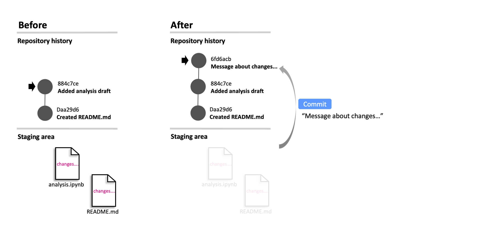
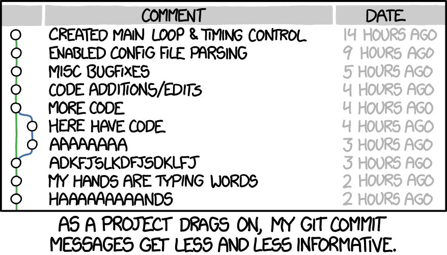
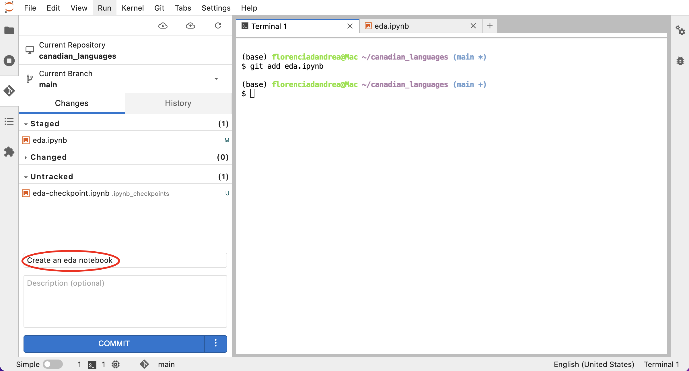
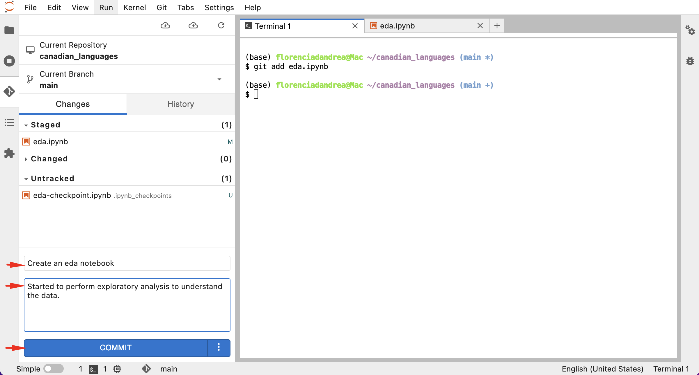
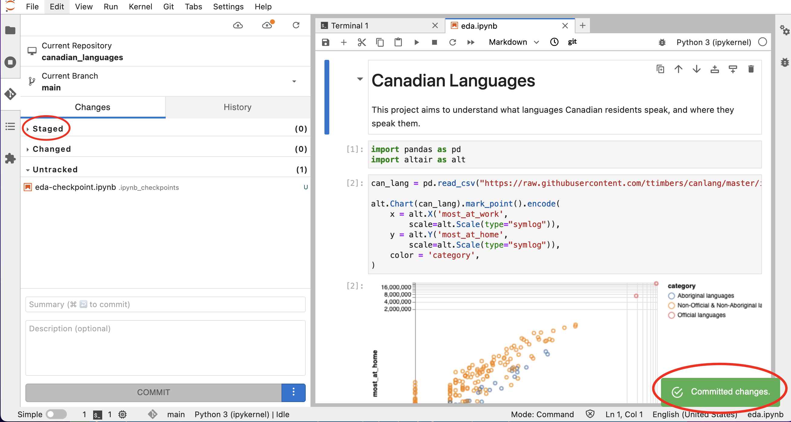
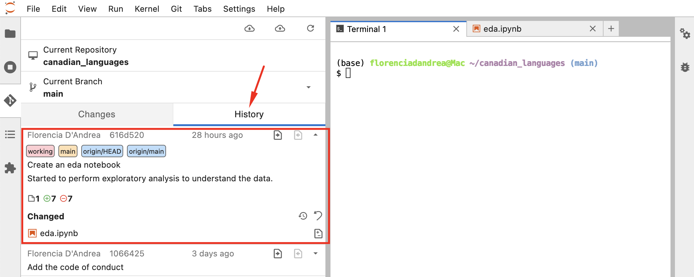
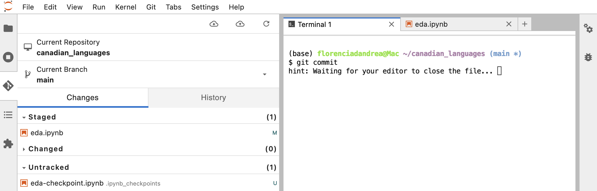
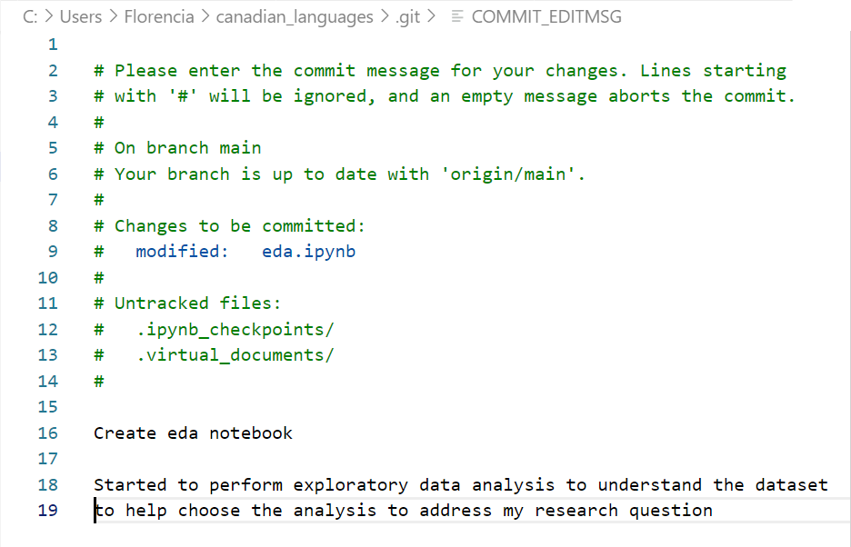
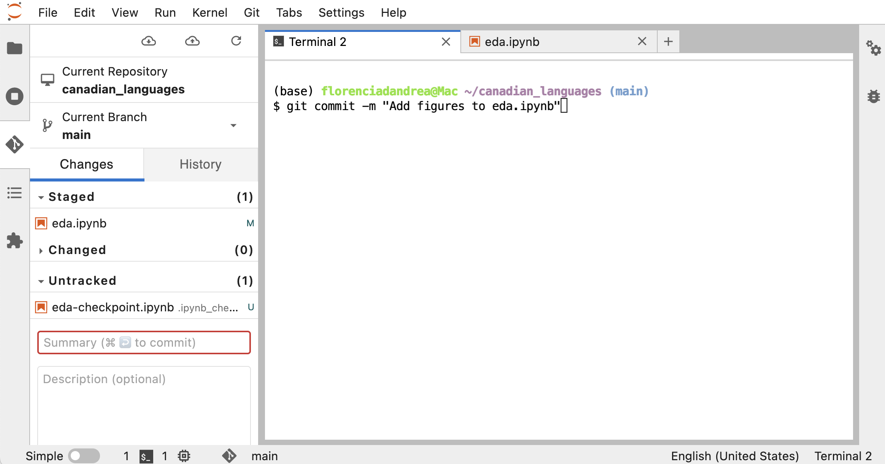

Committing changes to a local repository
Committing the modified files in the staging area

Committing to add sections to your project history

image source: xkcd.com
Making the commit (JupyterLab IDE)

Making the commit (JupyterLab IDE)

Making the commit (JupyterLab IDE)
Bad messages
❌ :
fixes an error
added new code
Good messages
✅ :
Reorder sections to make the README more welcoming
Fix notebook error to allow for export with images
Making the commit (JupyterLab IDE)

Making the commit (JupyterLab IDE)

Making the commit (Terminal)

git commit
Making the commit (Terminal)

Making the commit (Terminal)

Let’s apply what we learned!